Based on your interest in creating a new beer label. We’ve evaluated over 2400 labels in this dataset, a third of them are classified as IPA or the similar APA. If Budweiser desires to cut into the craft brew market, this is an excellent place to start.
These tests provide overwhelming evidence of distinct differences in IBU and ABV between Standard American IPA’s, Double IPA’s, and APA’s. Based on this information, it would be prudent for Budweiser’s brewers to stick to the range for American IPA’s shown in this dataset of an IBU between 60-70 to be within the range of 50% of American IPA’s on market. Staying within this range will keep it distinct from the American Pale Ales while not straying far from the drinkability people look for in Budweiser.
In our review we found many beers were missing information on their IBU. This scale is not as widespread in America as it is in Germany, where beer below 20 IBU is considered fraudulently labeled. When Adolphus Busch started Budweiser, he was looking to make Americans love beer. Now Budweiser could bring this distinct flavor to a broader audience. Inviting them to fall in love with the American IPA.
##“It is my aim to win the American people over … to make them all lovers of beer.” - Adolphus Busch (1905)
Here are the specific questions you requested, above each you will find a brief explanation of the code contained to generate the data.
These are the r libraries we used to evaluate the brewery and beer datasets
library(tidyverse)
library(ggthemes)
library(caret)
library(mvtnorm)
library(class)
library(e1071)
library(usmap)Included with this evaluation are the provided CSVs of Beer and Brewery data. Please leave them in the same folder when running this file.
See Appendix for Raw Datasets
#import data
beers <- read.csv("Beers.csv",header = TRUE)
breweries <- read.csv("Breweries.csv",header = TRUE)Here we are taking the brewery dataset and sorting by the state abbreviation. We have sorted it for easier readability and comparison starting with state with most breweries: Colorado. Every state is represented by at least one brewery in this list as well as the Distric of Columbia.
print(breweries %>% count(State,sort=TRUE), n = 51)## # A tibble: 51 x 2
## State n
## <fct> <int>
## 1 " CO" 47
## 2 " CA" 39
## 3 " MI" 32
## 4 " OR" 29
## 5 " TX" 28
## 6 " PA" 25
## 7 " MA" 23
## 8 " WA" 23
## 9 " IN" 22
## 10 " WI" 20
## 11 " NC" 19
## 12 " IL" 18
## 13 " NY" 16
## 14 " VA" 16
## 15 " FL" 15
## 16 " OH" 15
## 17 " MN" 12
## 18 " AZ" 11
## 19 " VT" 10
## 20 " ME" 9
## 21 " MO" 9
## 22 " MT" 9
## 23 " CT" 8
## 24 " AK" 7
## 25 " GA" 7
## 26 " MD" 7
## 27 " OK" 6
## 28 " IA" 5
## 29 " ID" 5
## 30 " LA" 5
## 31 " NE" 5
## 32 " RI" 5
## 33 " HI" 4
## 34 " KY" 4
## 35 " NM" 4
## 36 " SC" 4
## 37 " UT" 4
## 38 " WY" 4
## 39 " AL" 3
## 40 " KS" 3
## 41 " NH" 3
## 42 " NJ" 3
## 43 " TN" 3
## 44 " AR" 2
## 45 " DE" 2
## 46 " MS" 2
## 47 " NV" 2
## 48 " DC" 1
## 49 " ND" 1
## 50 " SD" 1
## 51 " WV" 1Additionally, here are those state counts displayed in map format to see concentrations of breweries to coastal regions: Pacific, Atlantic, and the great lakes. Colorado and Texas really stand out in the central region.
brew_count_by_state <- breweries %>% group_by(State) %>% tally()
brew_count_by_state$state <- trimws(as.character(brew_count_by_state$State))
brew_count_by_state$fips <- fips(brew_count_by_state$state)
attach(brew_count_by_state)
brew_count_fips <- brew_count_by_state[order(fips),]
detach(brew_count_by_state)
plot_usmap(data = brew_count_fips, values = "n", color = "blue") +
labs(title = "Breweries by State", subtitle = "Count of Breweries per state") +
scale_fill_continuous(low = "white", high = "blue", name = "Breweries by State", label = scales::comma) + theme(legend.position = "right")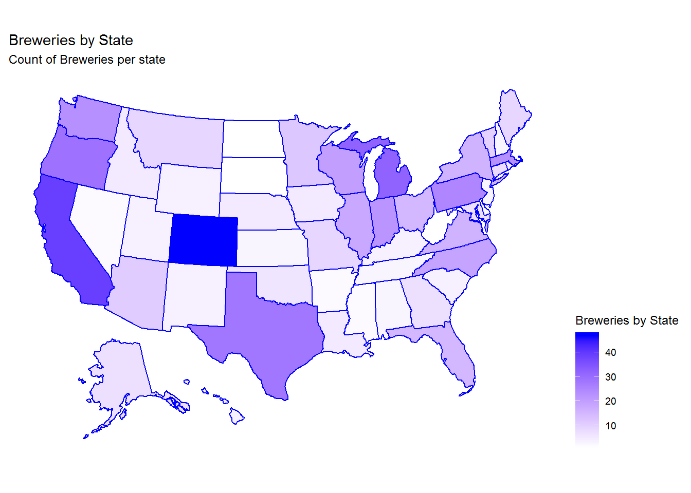
To bring these two datasets together we have joined them on the brewery’s id. The Name columns of each were transformed to Brewery_Name and Beer_Name for better readability. Below are the first and last 6 beers from the joined datasets.
#Merge the datasets
Beer2 <- merge(beers, breweries, by.x = "Brewery_id", by.y = "Brew_ID")
#Rename the Beer and Brewery Columns
Beer2 <- Beer2 %>%
rename(
Brewery_Name = Name.y,
Beer_Name = Name.x
)
#Display the first and last 6 rows
head(Beer2, 6)## Brewery_id Beer_Name Beer_ID ABV IBU Style Ounces Brewery_Name
## 1 1 Get Together 2692 0.045 50 American IPA 16 NorthGate Brewing
## 2 1 Maggie's Leap 2691 0.049 26 Milk / Sweet Stout 16 NorthGate Brewing
## 3 1 Wall's End 2690 0.048 19 English Brown Ale 16 NorthGate Brewing
## 4 1 Pumpion 2689 0.060 38 Pumpkin Ale 16 NorthGate Brewing
## 5 1 Stronghold 2688 0.060 25 American Porter 16 NorthGate Brewing
## 6 1 Parapet ESB 2687 0.056 47 Extra Special / Strong Bitter (ESB) 16 NorthGate Brewing
## City State
## 1 Minneapolis MN
## 2 Minneapolis MN
## 3 Minneapolis MN
## 4 Minneapolis MN
## 5 Minneapolis MN
## 6 Minneapolis MNtail(Beer2, 6)## Brewery_id Beer_Name Beer_ID ABV IBU Style Ounces
## 2405 556 Pilsner Ukiah 98 0.055 NA German Pilsener 12
## 2406 557 Heinnieweisse Weissebier 52 0.049 NA Hefeweizen 12
## 2407 557 Snapperhead IPA 51 0.068 NA American IPA 12
## 2408 557 Moo Thunder Stout 50 0.049 NA Milk / Sweet Stout 12
## 2409 557 Porkslap Pale Ale 49 0.043 NA American Pale Ale (APA) 12
## 2410 558 Urban Wilderness Pale Ale 30 0.049 NA English Pale Ale 12
## Brewery_Name City State
## 2405 Ukiah Brewing Company Ukiah CA
## 2406 Butternuts Beer and Ale Garrattsville NY
## 2407 Butternuts Beer and Ale Garrattsville NY
## 2408 Butternuts Beer and Ale Garrattsville NY
## 2409 Butternuts Beer and Ale Garrattsville NY
## 2410 Sleeping Lady Brewing Company Anchorage AKThere are a few ways we could go about dealing with these; the best way to glean reliable information from any statistics related to the data would be to ignore entries with missing values for the variable(s) being examined, as using any input (like say, a mean) in place of an unknown value is very likely to misrepresent the true nature of the data.
In this case, IBU is a good example of the potential perils of trying to impute missing values because it varies greatly between beers regardless of style. The IBU measurement is going to be impacted heavily by the flavor/taste a brewer is going for, and breweries have little practical interest in producing beers that aren’t distinguishably different than those they already have, especially if they will produce multiple iterations of a certain style. The best course of action is probably to exclude beers missing the IBU value when examining IBU despite the misfortune that this excludes over 1000 beers (40% of the beers).
For similar reasons, beers missing ABV should also be excluded from analyses involving ABV. There is less reason for concern with these exclusions due to the relatively small number of beers missing this information.
#Find out which columns have missing values
names(which(colSums(is.na(Beer2))>0))## [1] "ABV" "IBU"#Count the missing values in each column
paste('ABV Missing - ',sum(is.na(Beer2$ABV)))## [1] "ABV Missing - 62"paste('IBU Missing - ', sum(is.na(Beer2$IBU)))## [1] "IBU Missing - 1005"paste('Style Missing - ', sum(is.na(Beer2$Style)))## [1] "Style Missing - 0"We took the median ABV and IBU per state, removing respective missing values.
See Appendix for full ordered lists of Median ABV Median IBU
Meds <- Beer2 %>%
group_by(State) %>%
summarize(
Median_ABV = median(ABV, na.rm = TRUE),
Median_IBU = median(IBU, na.rm = TRUE)
)With these Medians, we have charted the states
Meds %>% ggplot(aes(x=reorder(State,Median_ABV), y=Median_ABV,fill = Meds$Median_ABV)) + scale_colour_gradient()+ geom_col(show.legend = FALSE) + ggtitle("Median ABV by State") + xlab("State") + ylab("Median ABV") + theme(axis.text.x = element_text(angle=90, size=8, vjust = .5))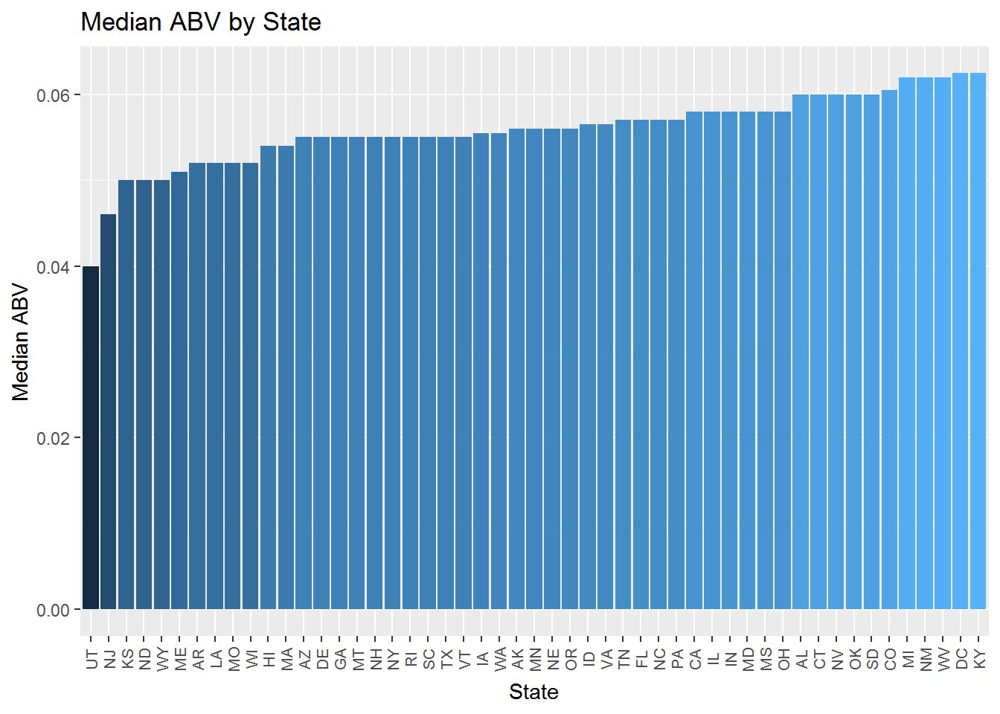
Meds %>% ggplot(aes(x=reorder(State,Median_IBU), y=Median_IBU,fill = Meds$Median_IBU)) + scale_colour_gradient()+ geom_col(show.legend = FALSE) + ggtitle("Median IBU by State") + xlab("State") + ylab("Median IBU") + theme(axis.text.x = element_text(angle=90, size=8, vjust = .5))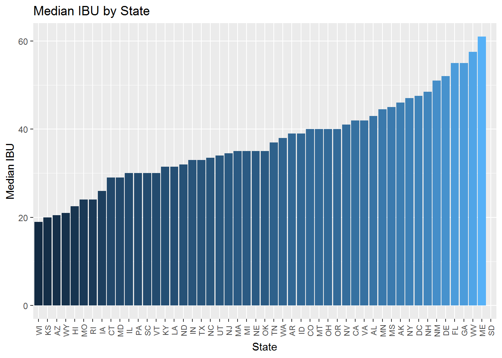
Meds$fips <- fips(trimws(as.character(Meds$State)))
plot_usmap(data = Meds, values = "Median_IBU", color = rgb(.2, .7, 1)) +
labs(title = "Median IBU by State", subtitle = "International Bitterness Units") +
scale_fill_continuous(low = "white", high = rgb(.2, .7, 1), name = "IBU", label = scales::comma) + theme(legend.position = "right")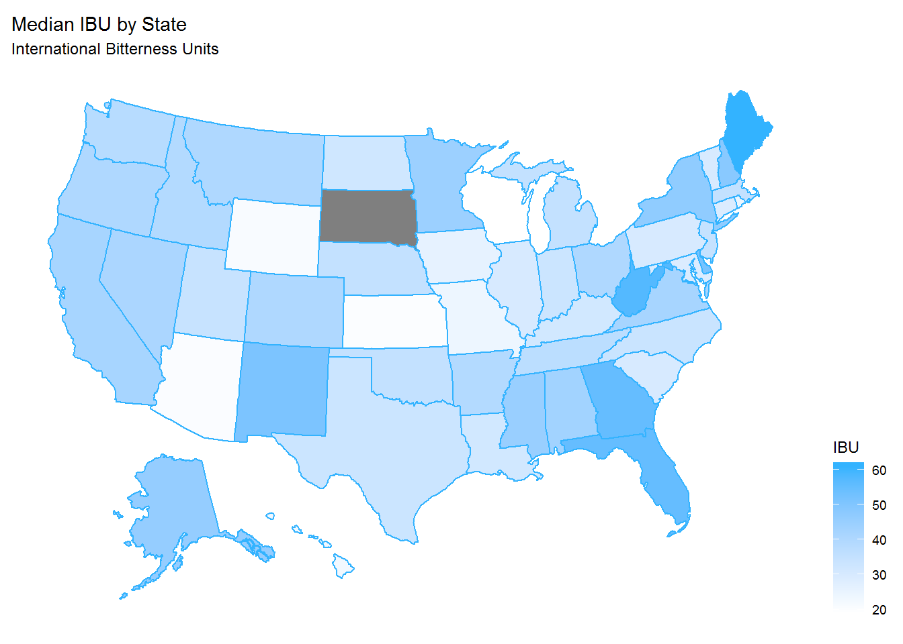
plot_usmap(data = Meds, values = "Median_ABV", color = rgb(.2, .7, 1)) +
labs(title = "Median ABV by State", subtitle = "Alcohol by Volume") +
scale_fill_continuous(low = "white", high = rgb(.2, .7, 1), name = "ABV", label = scales::comma) + theme(legend.position = "right")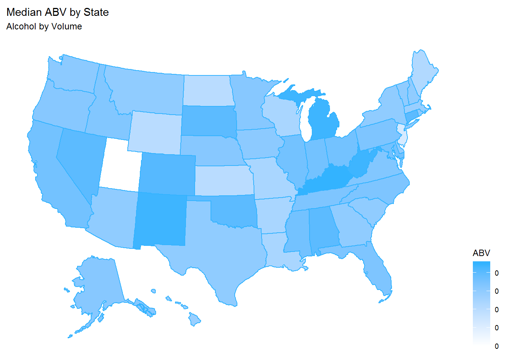
Colorado beer Lee Hill Series Vol. 5 Belgian Quadrupel Ale ist the most alcoholic at with 0.128 ABV ### Highest IBU: Oregon beer Bitter Bitch Imperial IPA is the bitterest beer at 138 IBU
Kentucky and the District of Columbia both having a median ABV of 0.0625 ### Highest Median IBU: Maine’s beer has the highest median bitterness with 61 IBU
#State in which the beer with the single highest ABV resides
maxABV = max(Beer2$ABV, na.rm = TRUE)
topABV = Beer2$`State`[which(Beer2$ABV==maxABV)]
paste('State with the highest ABV: ', topABV, ' - ', maxABV, 'ABV')## [1] "State with the highest ABV: CO - 0.128 ABV"#State in which the beer with the single highest IBU resides
maxIBU = max(Beer2$IBU, na.rm = TRUE)
topIBU = Beer2$`State`[which(Beer2$IBU==maxIBU)]
paste('State with the highest ABV: ', topIBU, ' - ', maxIBU, 'IBU')## [1] "State with the highest ABV: OR - 138 IBU"#States with the highest median ABV
maxMedABV = max(Meds$Median_ABV, na.rm = TRUE)
topMedABV = Meds$`State`[which(Meds$Median_ABV==maxMedABV)]
paste('States with the highest median ABV (tie): ')## [1] "States with the highest median ABV (tie): "paste(topMedABV, ' - ', maxMedABV, 'ABV')## [1] " DC - 0.0625 ABV" " KY - 0.0625 ABV"#States with the highest median IBU
maxMedIBU = max(Meds$Median_IBU, na.rm = TRUE)
topMedIBU = Meds$`State`[which(Meds$Median_IBU== maxMedIBU)]
paste('States with the highest median IBU: ', topMedIBU, ' - ', maxMedIBU, 'IBU')## [1] "States with the highest median IBU: ME - 61 IBU"Comment on the summary statistics and distribution of the ABV variable. The distribution of ABV of all the beers in the dataset appears fairly normal to slightly right-skewed.The median ABV is about 5.6% and 75% of the data is contained within the range of 5% to 6.7% ABV, indicating that most beers tend to be close to the median ABV. The maximum ABV of 12.8% is a full five standard deviations from the mean of about 6%, and the minimum ABV of 1% is over 4 standard deviations from the mean. Based this information and visual assessment of the histogram, beers with ABV this high or low appear to be rare outliers.
summary(Beer2$ABV)## Min. 1st Qu. Median Mean 3rd Qu. Max. NA's
## 0.00100 0.05000 0.05600 0.05977 0.06700 0.12800 62sd(Beer2$ABV, na.rm = TRUE) #Standard deviation## [1] 0.01354173hist(Beer2$ABV, breaks = 20, main = "Distribution of Alcohol Content", xlab = "Alcohol By Volume")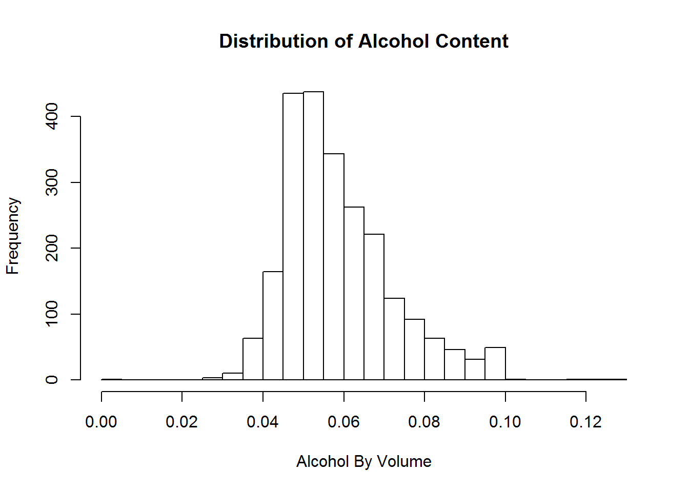
Based on a scatter plot of ABV vs IBU, there does appear to be evidence of a moderate positive correlation. The ABV looks like it trends upward as IBU increases. The calculated correlation coefficient of .67 supports this.
#Scatter plot with linear model
Beer2 %>% ggplot(aes(x=IBU, y=ABV, fill = ABV)) + scale_colour_gradient()+ geom_point() + geom_smooth(method = lm) + ggtitle("IBU vs ABV") + xlab("IBU") + ylab("ABV")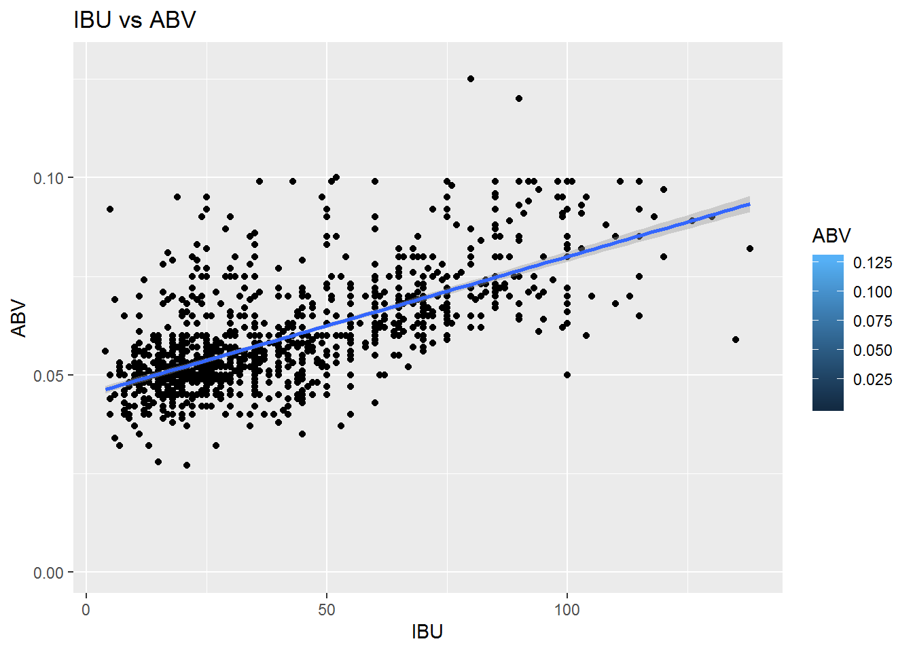
#Correlation of IBU and ABV
Beer3 <- Beer2 %>% filter(!is.na(Beer2$ABV))
Beer3 <- Beer3 %>% filter(!is.na(Beer3$IBU))
cor(x=Beer3$ABV, y=Beer3$IBU)## [1] 0.6706215Given the scatterplot above, we’d like to know if ther is enough of a relationship between IBU and ABV to categorize a beer as either an IPA or an Ale knowing only these two numbers. We will use the K - Nearest Neighbors (KNN) test. This model will use K number of beers closest by distance (as you’d see on a scatterplot) to estimate what kind of beer it is.
To compare IPAs to other Ales, we broke up the beers into sets based on their beer type containing IPA or just Ale.
See Appendix for Full list of Beer Types
First we checked for the best K value to use to train the KNN. We split the dataset in half checking K values 1 to 80 for accuracy. For each K value we took the mean accuracy of 50 runs for comparison.
#Identify IPAs, Non-IPA Ales, or other styles.
#All IPAs have "IPA" somehwere in the style name, so this can be used to identify IPA vs not IPA.
Beer3$Category[grepl("IPA", Beer3$Style)] <- "IPA"
Beer3$Category[is.na(Beer3$Category) & grepl("Ale", Beer3$Style)] <- "Non-IPA Ale"
Beer3$Category[is.na(Beer3$Category)] <- "Other"
Beer4 <- Beer3 %>% filter(Category == "IPA" | Category == "Non-IPA Ale")
#Identify the best k
#Set Split percentages for train and test sets
set.seed(10)
splitPerc = .5
#loop through values of k to find best model on 100 generated train/test combos
iterations = 50
numks = 80
masterAcc = matrix(nrow = iterations, ncol = numks)
for(j in 1:iterations)
{
accs = data.frame(accuracy = numeric(80), k = numeric(80))
trainIndices = sample(1:dim(Beer4)[1],round(splitPerc * dim(Beer4)[1]))
train = Beer4[trainIndices,]
test = Beer4[-trainIndices,]
for(i in 1:numks)
{
classifications = knn(train[,c(4,5)],test[,c(4,5)],train$Category, prob = TRUE, k = i)
table(classifications,test$Category)
CM = confusionMatrix(table(classifications,test$Category))
masterAcc[j,i] = CM$overall[1]
}
}Based on the graph, you can see there is a high spike in accuracy at k=5 and it levels out after 30. Our model will use the closest 5 beers to estimate what category it should fall into.
MeanAcc = colMeans(masterAcc)
#plot k vs accuracy and identify k with highest accuracy
plot(seq(1,numks,1),MeanAcc, type = "l", main="Accuracy of KNN model vs K value") 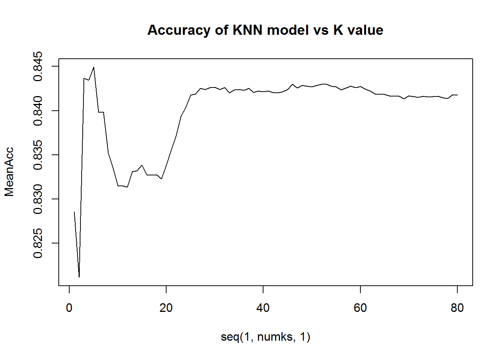
which.max(MeanAcc)## [1] 5Using a KNN model with k=5, we could categorize beers into IPAs or Non-IPA Ales with about 87% accuracy using only IBU and ABV. This indicates that on average, there is a clear enough distinction between IPAs and other Ales in their combination of ABV and IBU to be able to reasonably identify an IPA from a different Ale based on these variables alone.
#knn classification using the tuned value of k
set.seed(10)
trainIndices = sample(seq(1:length(Beer4$ABV)),round(.7*length(Beer4$ABV)))
trainBeer = Beer4[trainIndices,]
testBeer = Beer4[-trainIndices,]
classif <- knn(trainBeer[,4:5],testBeer[,4:5],trainBeer$Category, prob=TRUE, k=5)
confusionMatrix(table(classif,testBeer$Category))## Confusion Matrix and Statistics
##
##
## classif IPA Non-IPA Ale
## IPA 105 15
## Non-IPA Ale 20 143
##
## Accuracy : 0.8763
## 95% CI : (0.8322, 0.9123)
## No Information Rate : 0.5583
## P-Value [Acc > NIR] : <2e-16
##
## Kappa : 0.7482
##
## Mcnemar's Test P-Value : 0.499
##
## Sensitivity : 0.8400
## Specificity : 0.9051
## Pos Pred Value : 0.8750
## Neg Pred Value : 0.8773
## Prevalence : 0.4417
## Detection Rate : 0.3710
## Detection Prevalence : 0.4240
## Balanced Accuracy : 0.8725
##
## 'Positive' Class : IPA
## Plotting IPAs vs other Ales
Beer4 %>%
ggplot(aes(x = IBU, y=ABV, color=Category)) + geom_point() + ggtitle("ABU vs. ABV for IPAs and Other Ales") +theme_stata()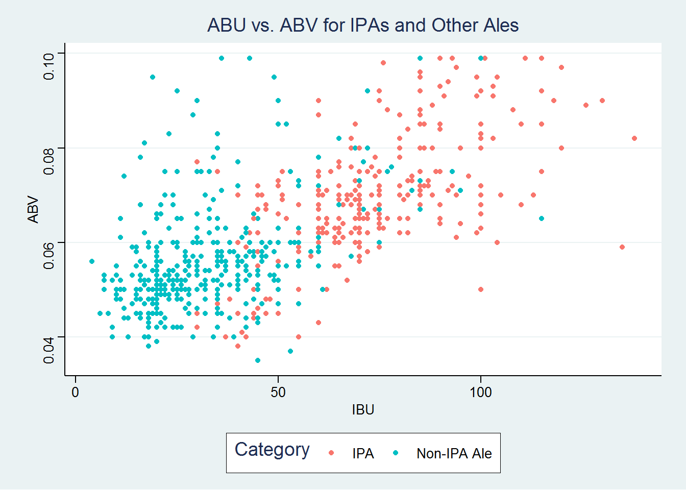
With the younger generation quickly ditching ubiquitous light beers for bolder options from the craft beer market, it is time to evolve by attempting to add more inimitable options to our lineup of beer labels. The booming resurgence of craft beer brewing has fostered unbridled experimentation in pursuit of finding unique formulas that can distinguish a brewer amidst his many peers. The lines separating the classification of beer styles are becoming blurrier and the opportunity to discover a new flavor that entices the common imbiber is riper than ever.
The India Pale Ale is the most prevalent and still one of the fastest growing craft beer styles in America. Of the 2400 labels in this dataset, a third of them are classified as IPA or the similar APA. If Budweiser desires to cut into the craft brew market, this is an excellent place to start.
The marketing and development team for Budweiser has proposed that a new label be introduced to the Budweiser Lineup - The Bud IPA. The team wants to label the beer with IPA because of its popular namesake in the craft beer market, but is interested to know how much room for experimentation they have when it comes to IBU and ABV while still being able to keep the simple “Bud IPA” label.
There are traditional differences that have culminated in industry defined standards for what makes a beer an Indian Pale Ale vs an American Pale Ale. But as IPAs, their siblings, and cousins dominate the craft beer market, many are suggesting there isn’t really any difference between them anymore. Could this mean we have free reign to develop a unique brew that could fall anywhere in the range of ABV and IBU and label it as the all-encompassing “IPA”? Answering these questions could open the door to understanding just how ambitious the formulation for this new label could be.
We can observe visually that there appears to be distinct differences in Bitterness and ABV for the 3 largest groups among IPAs and APAs.
# Boxplots of IBU for 3 different PAs
# Pare down data to just 3 groups of interest
IPAtest <- Beer3 %>% filter(Beer3$Style == "American IPA" | Beer3$Style == "American Double / Imperial IPA" | Beer3$Style == "American Pale Ale (APA)")
IPAtest %>%
ggplot(aes(x = Style, y=IBU, fill=Style)) + geom_boxplot(color="black", show.legend = FALSE) + ggtitle("Bitterness Distribution of Pale Ales") +theme_stata()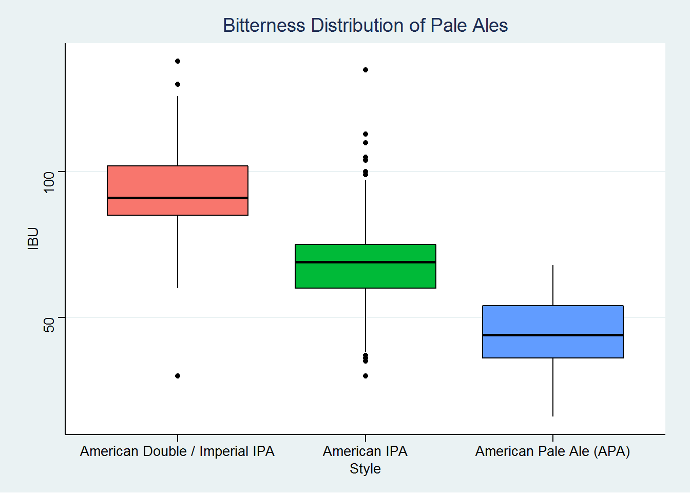
# Boxplots of ABV for 3 different PAs
IPAtest %>%
ggplot(aes(x = Style, y=ABV, fill=Style)) + geom_boxplot(color="black", show.legend = FALSE) + ggtitle("Alcohol by Volume Distribution of Pale Ales") +theme_stata()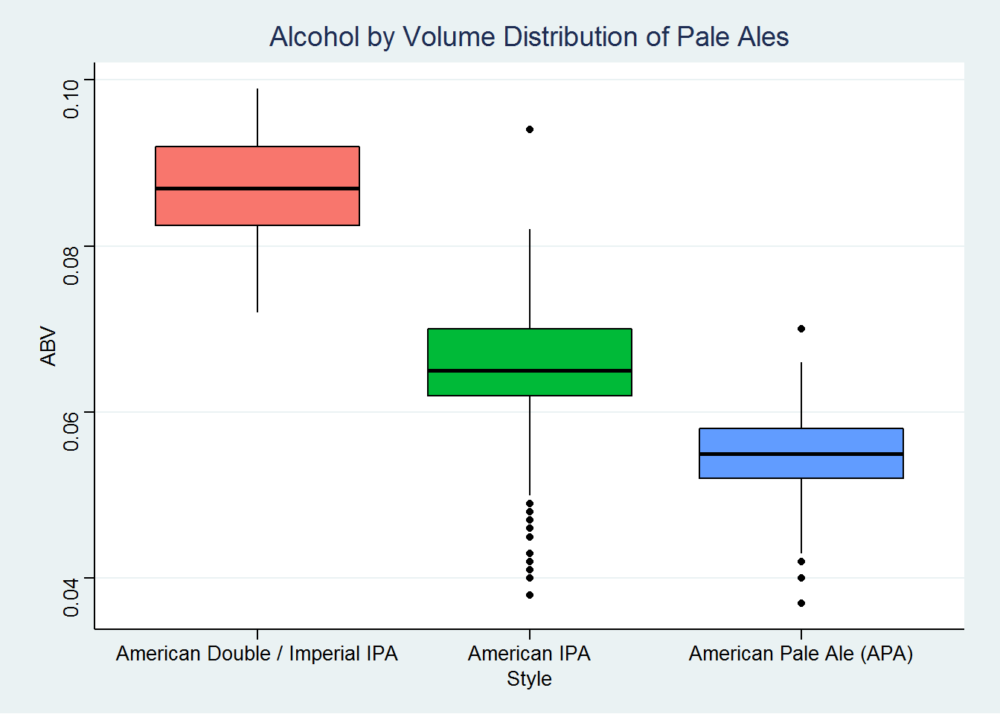
#Relationship of ABV and IBU for the 3 groups
IPAtest %>%
ggplot(aes(x = IBU, y=ABV, color=Style)) + geom_point() + ggtitle("IBU vs ABV for different Pale Ales") +theme_stata()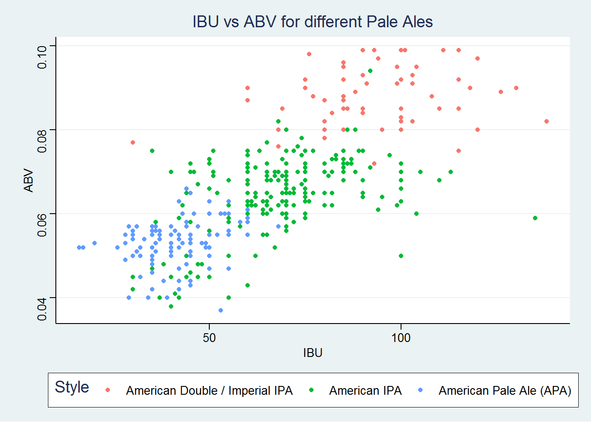
All of the plots show distinct separate groups for the 3 styles for both ABV and IBU. We can confirm whether or not there are any significant differences between the groups with an ANOVA.
See Appendix for assumption checks to confirm ANOVA can be performed IBU ANOVA Checks ABV ANOVA Checks
#Run ANOVA on IBU for the 3 groups
IPAtest_IBU <- aov(IBU ~ Style, data=IPAtest)
summary(IPAtest_IBU)## Df Sum Sq Mean Sq F value Pr(>F)
## Style 2 123758 61879 270.6 <2e-16 ***
## Residuals 526 120301 229
## ---
## Signif. codes: 0 '***' 0.001 '**' 0.01 '*' 0.05 '.' 0.1 ' ' 1#Run ANOVA on ABV for the 3 groups
IPAtest_ABV <- aov(ABV ~ Style, data=IPAtest)
summary(IPAtest_ABV)## Df Sum Sq Mean Sq F value Pr(>F)
## Style 2 0.05399 2.7e-02 460.7 <2e-16 ***
## Residuals 526 0.03082 5.9e-05
## ---
## Signif. codes: 0 '***' 0.001 '**' 0.01 '*' 0.05 '.' 0.1 ' ' 1The F statistics and corresponding small p values confirm that there is significant evidence of a difference between the different groups for both IBU and ABV.
We ran hypothesis test on all combinations using Tukey-Kramer. These tests provide overwhelming evidence (p values are essentially zero) of distinct differences in IBU and ABV between Standard American IPA’s, Double IPA’s, and APA’s. Based on this information, it would be prudent for Budweiser’s brewers to stick to the range for American IPA’s shown in this dataset if they want to avoid looking foolish using the “IPA” label.
#Tukey-Kramer adjusted confidence intervals for IBU differences between groups
TukeyHSD(IPAtest_IBU)## Tukey multiple comparisons of means
## 95% family-wise confidence level
##
## Fit: aov(formula = IBU ~ Style, data = IPAtest)
##
## $Style
## diff lwr upr p adj
## American IPA-American Double / Imperial IPA -25.68545 -30.27274 -21.09816 0
## American Pale Ale (APA)-American Double / Imperial IPA -48.37882 -53.38917 -43.36848 0
## American Pale Ale (APA)-American IPA -22.69338 -26.22257 -19.16418 0#Tukey-Kramer adjusted confidence intervals for ABV differences between groups
TukeyHSD(IPAtest_ABV)## Tukey multiple comparisons of means
## 95% family-wise confidence level
##
## Fit: aov(formula = ABV ~ Style, data = IPAtest)
##
## $Style
## diff lwr upr p adj
## American IPA-American Double / Imperial IPA -0.022886024 -0.02520800 -0.020564049 0
## American Pale Ale (APA)-American Double / Imperial IPA -0.032719477 -0.03525559 -0.030183364 0
## American Pale Ale (APA)-American IPA -0.009833453 -0.01161984 -0.008047062 0These tests provide overwhelming evidence of distinct differences in IBU and ABV between Standard American IPA’s, Double IPA’s, and APA’s. Based on this information, it would be prudent for Budweiser’s brewers to stick to the range for American IPA’s shown in this dataset of an IBU between 60-70 to be within the range of 50% of American IPA’s on market. Staying within this range will keep it distinct from the American Pale Ales while not straying far from the drinkability people look for in Budweiser.
In our review we found many beers were missing information on their IBU. This scale is not as widespread in America as it is in other countries. When Adolphus Busch started Budweiser, he was looking to make Americans love beer. Now Budweiser could bring this distinct flavor to a broader audience. Inviting them to fall in love with the American IPA.
beertypes =unique(factor(Beer2$Style))
beertypes[order(beertypes)]## [1] Abbey Single Ale
## [3] Altbier American Adjunct Lager
## [5] American Amber / Red Ale American Amber / Red Lager
## [7] American Barleywine American Black Ale
## [9] American Blonde Ale American Brown Ale
## [11] American Dark Wheat Ale American Double / Imperial IPA
## [13] American Double / Imperial Pilsner American Double / Imperial Stout
## [15] American India Pale Lager American IPA
## [17] American Malt Liquor American Pale Ale (APA)
## [19] American Pale Lager American Pale Wheat Ale
## [21] American Pilsner American Porter
## [23] American Stout American Strong Ale
## [25] American White IPA American Wild Ale
## [27] Baltic Porter Belgian Dark Ale
## [29] Belgian IPA Belgian Pale Ale
## [31] Belgian Strong Dark Ale Belgian Strong Pale Ale
## [33] Berliner Weissbier Bière de Garde
## [35] Bock Braggot
## [37] California Common / Steam Beer Chile Beer
## [39] Cider Cream Ale
## [41] Czech Pilsener Doppelbock
## [43] Dortmunder / Export Lager Dubbel
## [45] Dunkelweizen English Barleywine
## [47] English Bitter English Brown Ale
## [49] English Dark Mild Ale English India Pale Ale (IPA)
## [51] English Pale Ale English Pale Mild Ale
## [53] English Stout English Strong Ale
## [55] Euro Dark Lager Euro Pale Lager
## [57] Extra Special / Strong Bitter (ESB) Flanders Oud Bruin
## [59] Flanders Red Ale Foreign / Export Stout
## [61] Fruit / Vegetable Beer German Pilsener
## [63] Gose Grisette
## [65] Hefeweizen Herbed / Spiced Beer
## [67] Irish Dry Stout Irish Red Ale
## [69] Kölsch Keller Bier / Zwickel Bier
## [71] Kristalweizen Light Lager
## [73] Low Alcohol Beer Märzen / Oktoberfest
## [75] Maibock / Helles Bock Mead
## [77] Milk / Sweet Stout Munich Dunkel Lager
## [79] Munich Helles Lager Oatmeal Stout
## [81] Old Ale Other
## [83] Pumpkin Ale Quadrupel (Quad)
## [85] Radler Rauchbier
## [87] Roggenbier Russian Imperial Stout
## [89] Rye Beer Saison / Farmhouse Ale
## [91] Schwarzbier Scotch Ale / Wee Heavy
## [93] Scottish Ale Shandy
## [95] Smoked Beer Tripel
## [97] Vienna Lager Wheat Ale
## [99] Winter Warmer Witbier
## 100 Levels: Abbey Single Ale Altbier American Adjunct Lager ... Witbiermed_ABV <-Meds[order(-Meds$Median_ABV),]
med_ABV## # A tibble: 51 x 4
## State Median_ABV Median_IBU fips
## <fct> <dbl> <dbl> <chr>
## 1 " DC" 0.0625 47.5 11
## 2 " KY" 0.0625 31.5 21
## 3 " MI" 0.062 35 26
## 4 " NM" 0.062 51 35
## 5 " WV" 0.062 57.5 54
## 6 " CO" 0.0605 40 08
## 7 " AL" 0.06 43 01
## 8 " CT" 0.06 29 09
## 9 " NV" 0.06 41 32
## 10 " OK" 0.06 35 40
## # ... with 41 more rowsmed_IBU <- Meds[order(-Meds$Median_IBU),]
med_IBU## # A tibble: 51 x 4
## State Median_ABV Median_IBU fips
## <fct> <dbl> <dbl> <chr>
## 1 " ME" 0.051 61 23
## 2 " WV" 0.062 57.5 54
## 3 " FL" 0.057 55 12
## 4 " GA" 0.055 55 13
## 5 " DE" 0.055 52 10
## 6 " NM" 0.062 51 35
## 7 " NH" 0.055 48.5 33
## 8 " DC" 0.0625 47.5 11
## 9 " NY" 0.055 47 36
## 10 " AK" 0.056 46 02
## # ... with 41 more rowsplot(IPAtest_IBU) #for checking assumptions for ANOVA 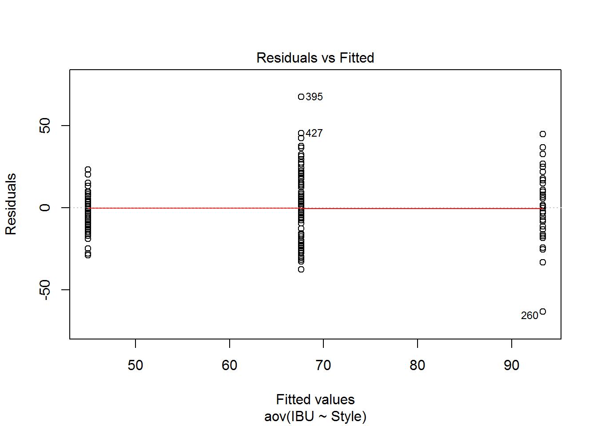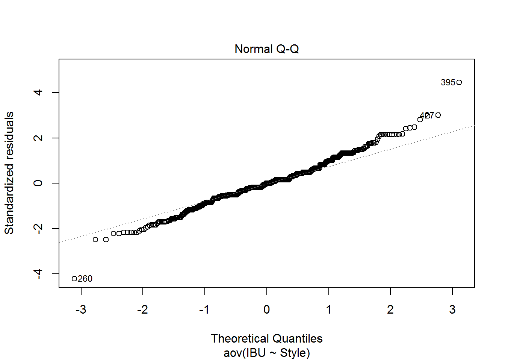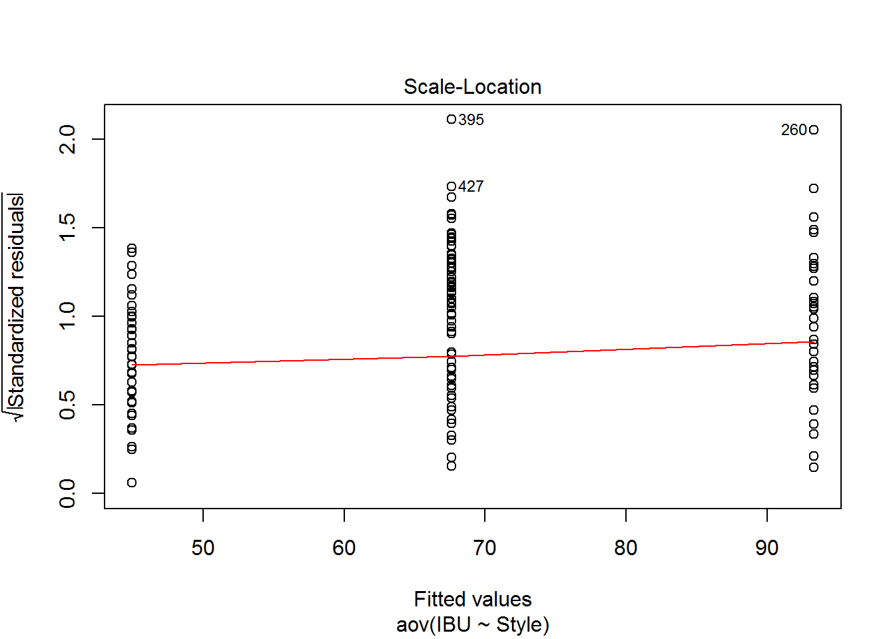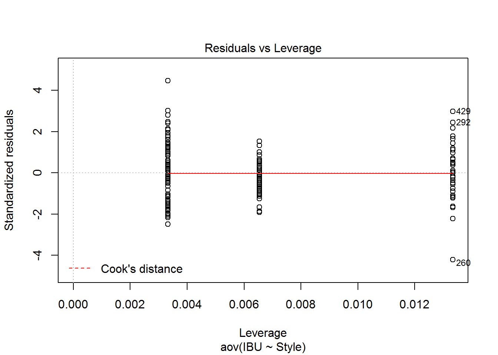
plot(IPAtest_ABV) #for checking assumptions for ANOVA 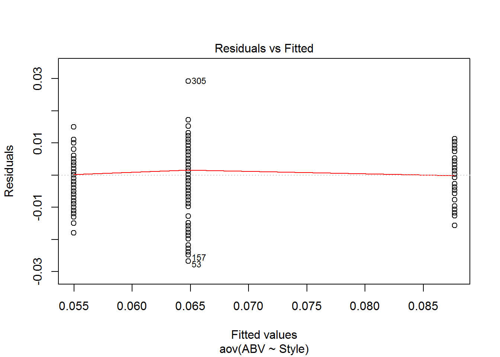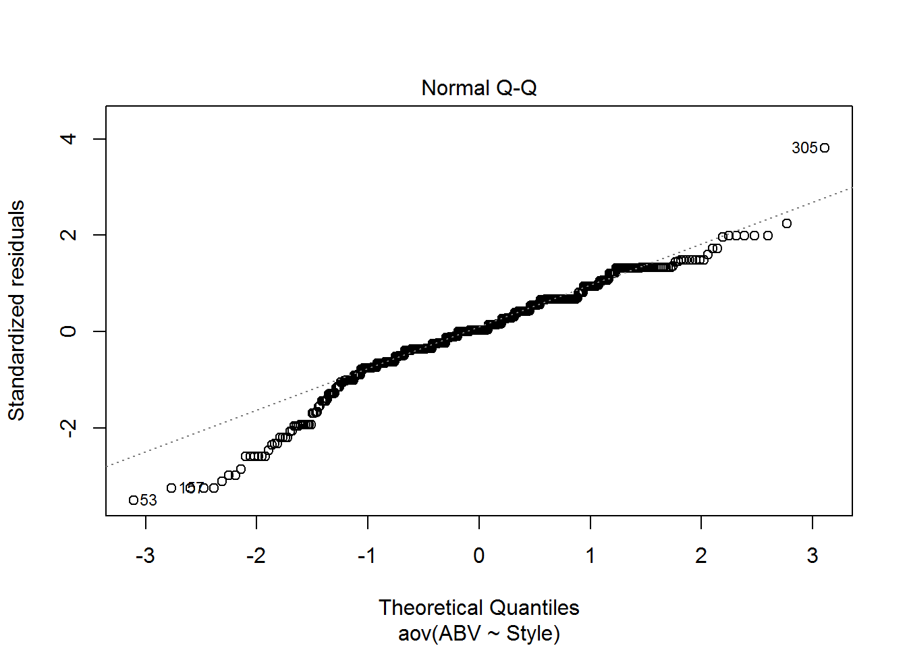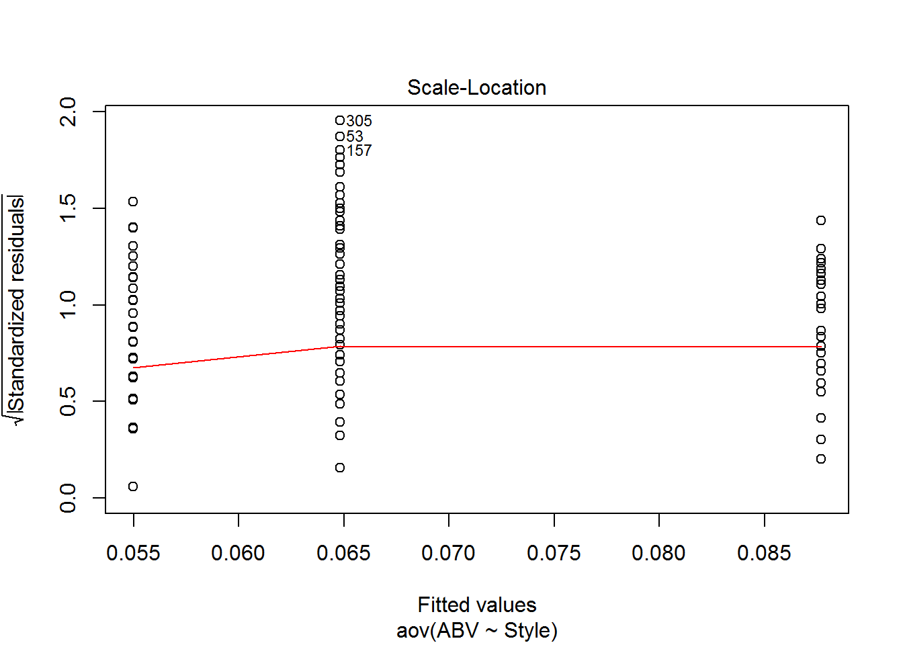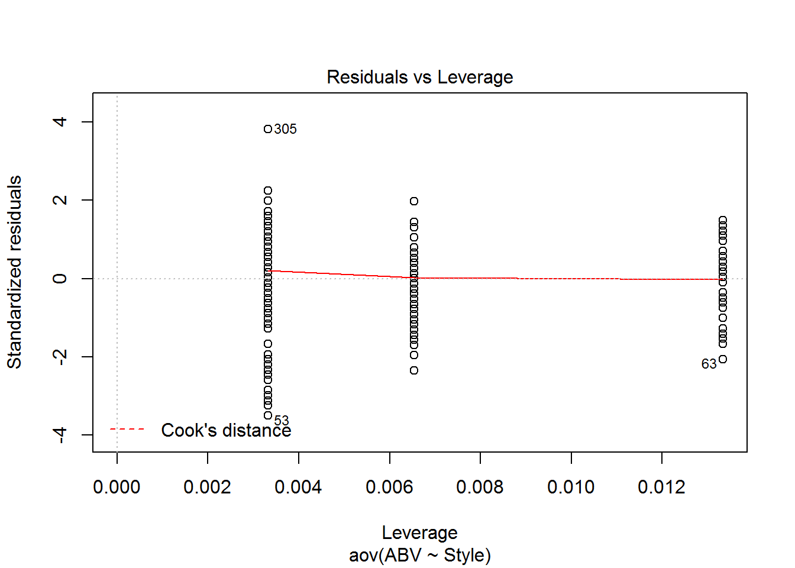